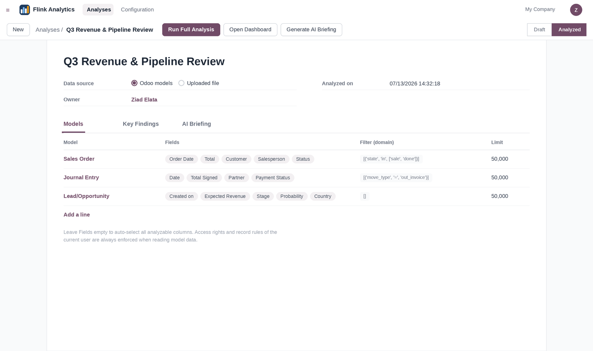
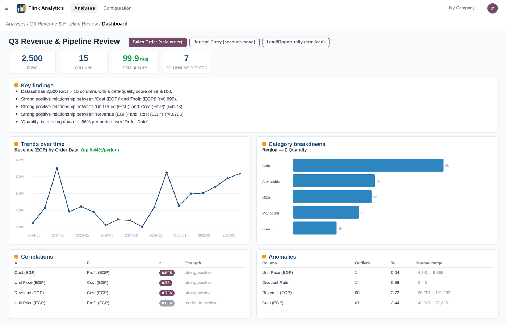
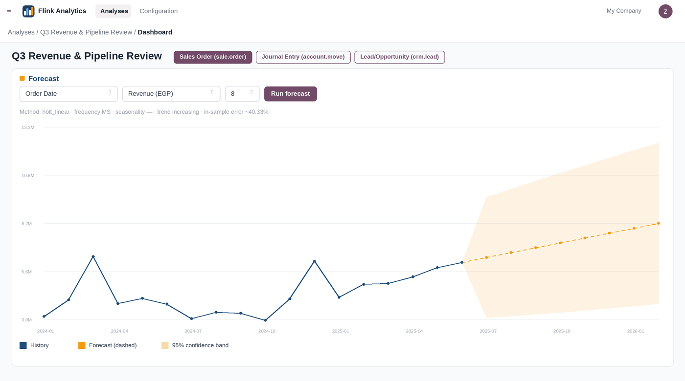
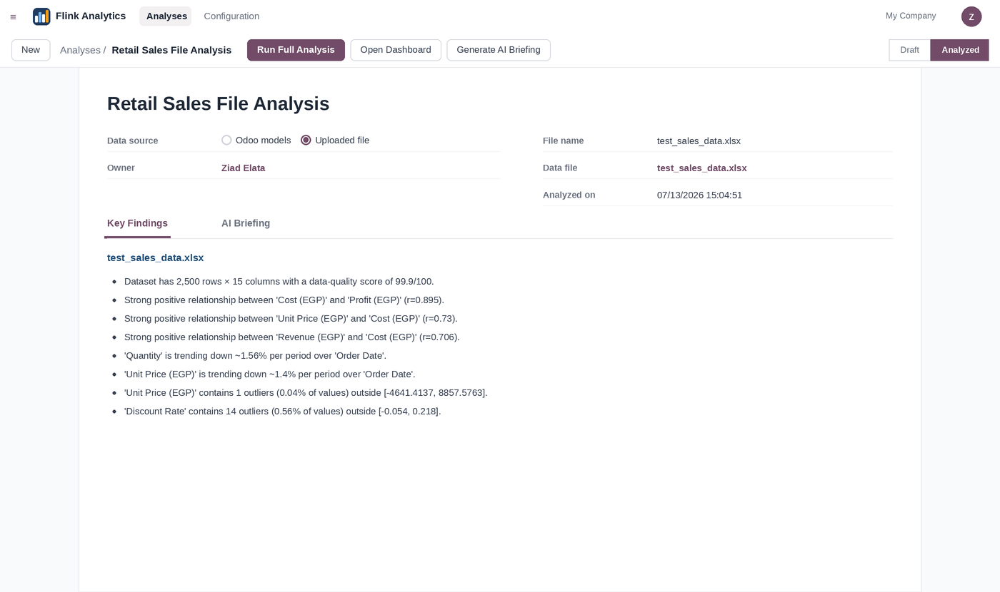
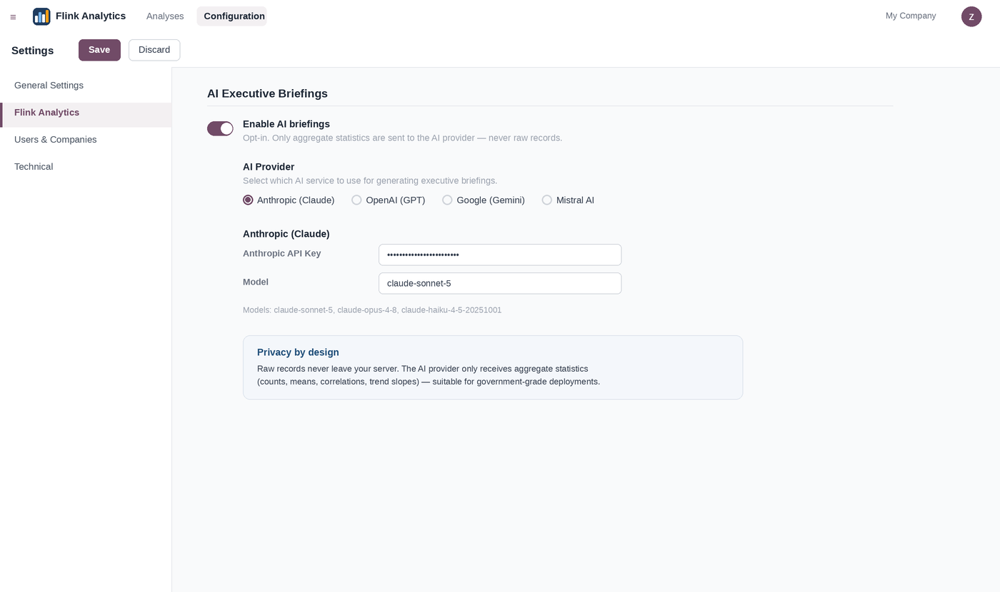
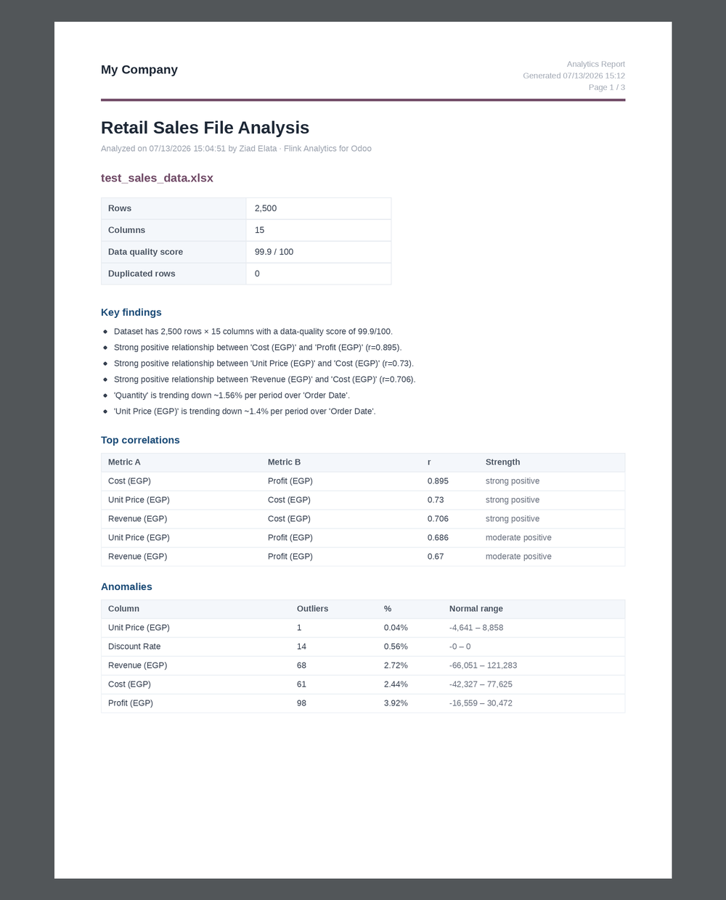

AI Business Intelligence for Odoo 19 — select any model (or several), or upload any data file, and get a complete automated analysis in one click. Built for businesses and government teams that need decision-ready insights, not raw tables.
One install. Any model, any file. Nine analytics engines. Zero configuration, zero SQL, zero data science team required.
Sales orders, invoices, CRM leads, inventory moves, HR records — pick any model, choose specific fields or let auto-selection do it, add a domain filter, and combine multiple models in one analysis. Each model gets its own dashboard tab. User access rights are always enforced.

KPIs, plain-language key findings, trend charts, category breakdowns, correlation tables, anomaly reports and customer segments — all generated automatically, rendered as a native Odoo dashboard.

Holt-Winters exponential smoothing with automatic frequency and seasonality detection, confidence bands and honest in-sample error reporting. Pick any date column and any metric — get the next quarters in seconds.

Not everything lives in Odoo. Drop in CSV, Excel, JSON or Parquet files — sales exports, survey results, legacy system dumps — and run the exact same full analysis on them.

Turn statistics into a boardroom-ready narrative with Claude, GPT, Gemini or Mistral — your choice, your API key. Strictly opt-in, and only aggregate statistics ever leave your server. Raw records never do. Designed for privacy-sensitive businesses and government deployments.

Print any analysis as a professional PDF: quality scores, key findings, correlations, anomalies, segments and the AI briefing — with your company header, straight from Odoo.

Semantic type detection, per-column statistics, histograms, duplicates, and a 0–100 data-quality score with plain-language warnings.
Significant relationships between metrics with strength and direction, plus automatic time-trend detection on every date column.
Univariate outliers (IQR) plus multivariate Isolation-Forest scanning to surface the records that do not belong.
Automatic K-Means clustering with auto-selected k — discover your natural customer and record groups with distinctive traits.
Holt-Winters with seasonality auto-detection, confidence bands, and honest error reporting — no black boxes.
User/Manager groups, record rules, and ORM-level access control — users can only ever analyze records they are allowed to read.
Install the module
(pandas & numpy required,
scikit-learn recommended)
Pick your models
or upload a file
Click Run Full Analysis
Explore the dashboard,
generate AI briefings,
print PDF reports
Questions, feature requests or installation help:
ziadelata@gmail.com
Python dependencies: pip3 install pandas numpy scikit-learn openpyxl